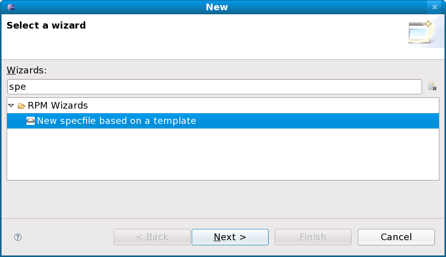

Start editing
Starting editing should be as simple as double click on any of
the spec files in your projects or going through the File/Open File
procedure and select your spec file.
Note: It is strongly recommended that you always have your
spec file in a project inside Eclipse workspace to take the most of the
editor. Rpmlint integration, some auto-completion and hyperlink are not
available when you are editing external (for the workspace) file.
At this stage you should see something nice looking like this:

Create new spec file
Part of the plugin is a wizard for creating new specfile. It can
be invoked from the menu File/New/Other which should bring the following
dialog where you can select "New specfile based on a template".

Dialog providing options and interface for filling the data in
the spec file should appear at this stage.

Description of the fields:
- Project: This is simply the place where generated spec
file will be stored and this should be a project in this workspace. For
convenience it is auto-filled with the active project when you started
the wizard.
- Select a template: Template functionality is based on
the templates provided by rpmdevtools. Check
its home page or just try the provided templates to see whether they
suits you. The names are clear enough to not need further explanations
- perl, ruby, python, etc.
- Version: The version of the software the spec file is
for.
- Summary: One line description of the packaged software.
- Group: Drop down menu for selecting the RPM Group this
package belongs to. The values in this drop down are filled from the
GROUPS file which is part of the RPM documentation package. This file
usually resist in a place like /usr/share/doc/rpm-*/GROUPS.
- License: The license of the packaged software.
- URL: The URL pointing to the home page of the packaged
software.
- Source0: The name of the source archive the package is
builded from.